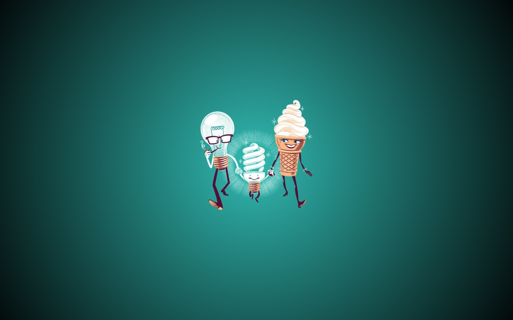
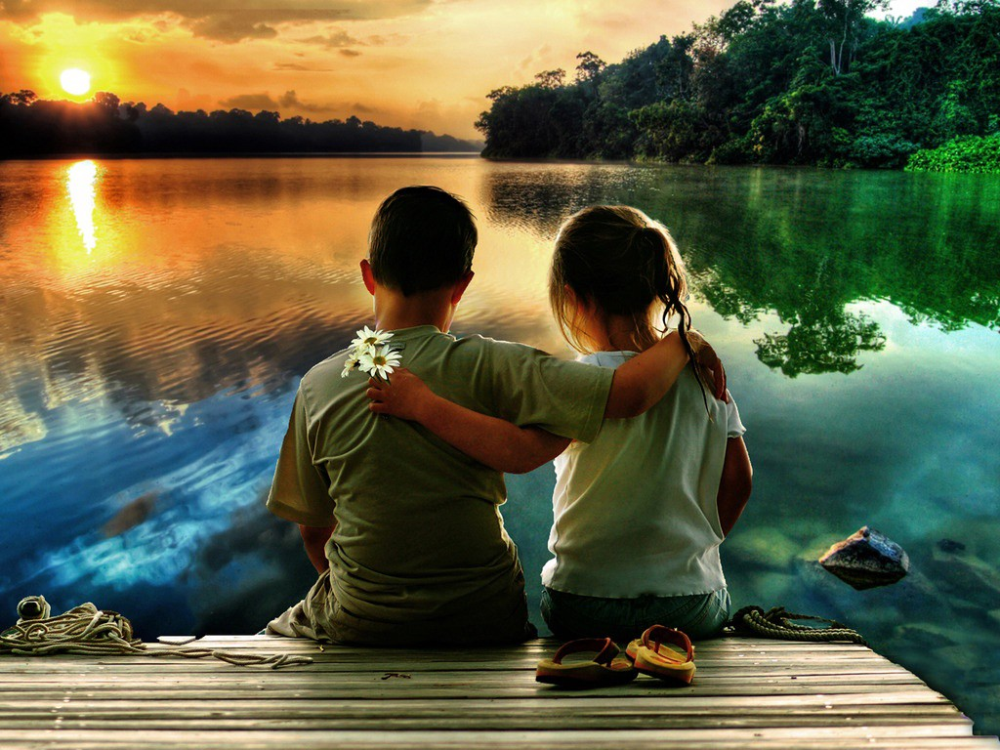

El examinar y comrpender lo que realmente creemos es la clave para cambiar el comportamiento y los resultados en nuestra vida
Creencia #1 Dios y Cristo:
- Creo en Dios y Cristo. Ellos son mis guias en este mundo. Dijo Jesus en Juan 14:6 "Yo soy el camino la verdad y la vida, nadie va al padre si no es por mi."
Creencia #2 Familia:
- Creo que mi familia me han convertido en el hombre que soy ahora, por sus consejos y enseñanzas. Hemos pasado por situaciones muy dificiles pero hemos encontrado las soluciones. Mi familia es una gran inspiración para salir adelante en la vida.

Creencia #3 Amor:
- Creo que el amor es muy fundamental en cada aspecto de nuestra vida desde la familia, hasta en nuestra vida profesional. Cada cosa que hagamos hay que hacerla con amor, para que tengamos existo en todos lo aspectos de nuestra vida.
Creencia #4 Proposito:
- Creo que el proposito trata de como vivamos la vida, en hacer amigos en el camino y encotrado un modo de disfrutar de todo lo que hagamos, siempre guiados a la voluntada de Dios.
Creencia #5 Perdon:
- Creo que el perdon me libra de odio, recentimiento y rencor, me hace una persona sana espiritualmente. dice Efesios 4:32 Más bien, sean bondadosos y compasivos unos con otros, y perdónense mutuamente, así como Dios los perdonó a ustedes en Cristo.

Creencia #6 Exito:
- Creo que el exito es un deseo que debe de ser mayor que el miedo a fracasar, sentirse bien con lo que logramos sabiendo que es bueno.
Creencia #7 Fracaso:
- Creo que el fracaso nos ayuda a ver claramente mis virtudes y debilidades, aprender de esto a pesar de lo duro que puede llegar hacer. Esto me ayuda a convertirme en una mejor persona.
Creencia #8 Salud fisica y mental:
- Creo que una buena salud fisica y mental, ayudar rapidamente a conseguir mis metas principales en la vida. Comer bien y tomar una actitud positiva nos haran personas con una excelente salud.